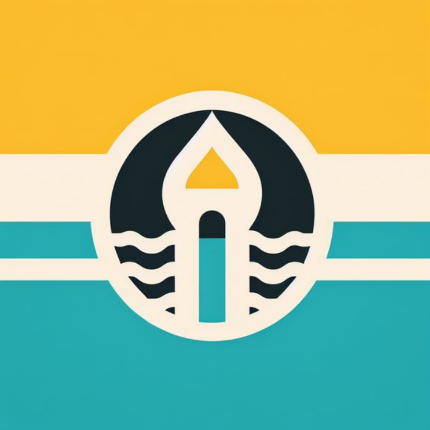
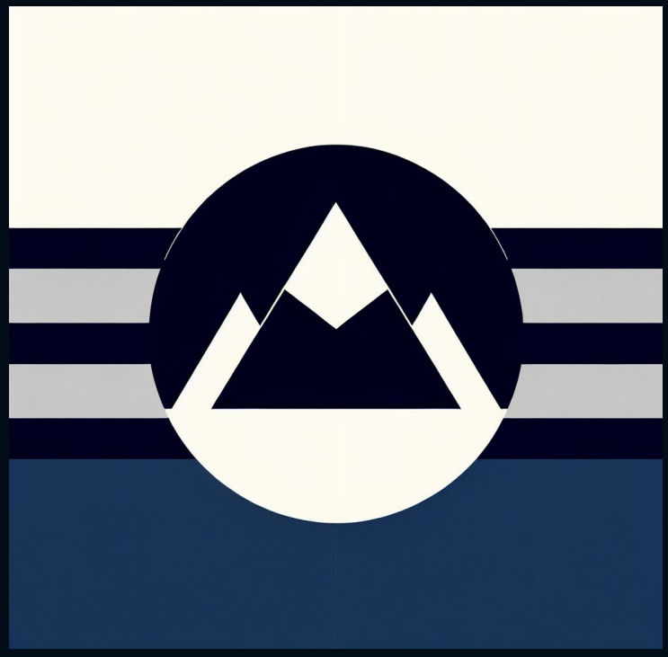
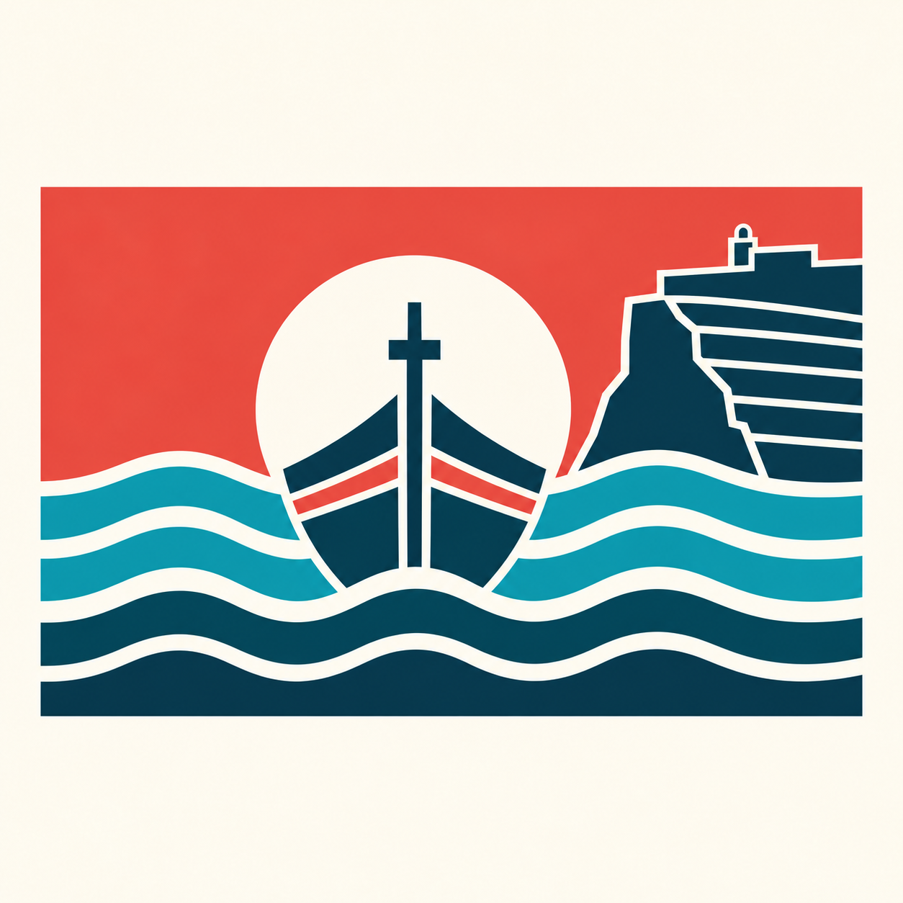

Novas Bandeiras Regionais
Um sistema generativo para reinterpretar visualmente diferentes localidades portuguesas.
O projeto explora a criação de novas bandeiras regionais através de um sistema que transforma características associadas a cada localidade numa composição visual.
Apesar de cada resultado possuir símbolos, formas e cores distintas, todas as bandeiras seguem uma linguagem comum, permitindo construir uma coleção visualmente coerente.
- Generative Design
- Creative Coding
- Web Design
- Inteligência Artificial
Localidade
Cada bandeira parte da identidade de uma cidade ou região.
Conceitos
Características locais são convertidas em referências visuais e palavras-chave.
Sistema
Regras comuns orientam a composição, a cor e a construção gráfica.
Bandeira
O processo origina uma interpretação visual distinta para cada localidade.




O projeto foi desenvolvido como uma experiência digital, combinando programação e inteligência artificial num processo capaz de gerar diferentes propostas a partir da informação associada a cada localidade.
O objetivo não é produzir uma solução definitiva para cada região, mas explorar como regras comuns podem gerar múltiplas identidades visuais dentro do mesmo sistema.